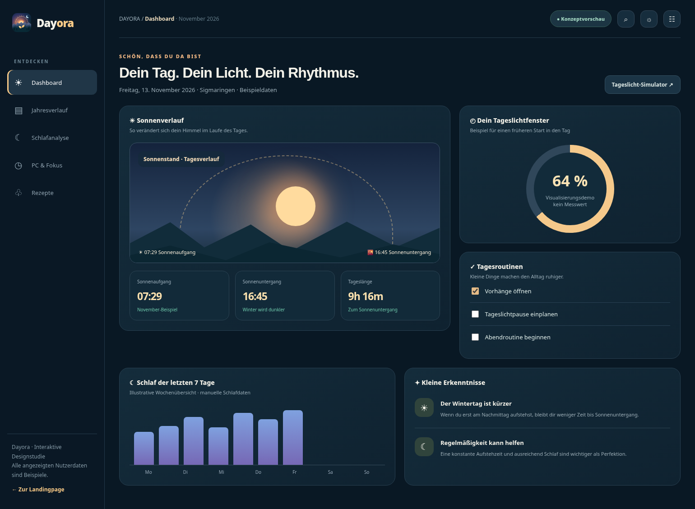

🥣
Frühstück · ca. 10 Minuten
Hafer-Bananen-Bowl
Haferflocken, Joghurt, Banane, Beeren und Nüsse. Einfach vorbereiten und morgens entspannt genießen.
Vegetarisch · flexibel anpassbarEntdecke, wie Tageslicht, Schlaf und digitale Gewohnheiten zusammenhängen. Mit interaktiven Sonnenzeiten, intelligenten Routinen und einem Dashboard, das sich deinem Leben anpasst.
Von astronomischen Sonnenzeiten bis zu deinem eigenen Abendritual: Dayora verbindet viele kleine Hilfen in einer ruhigen, verständlichen Oberfläche.
Sonnenaufgang, Dämmerung, Jahreszeiten, Tageslänge und ein interaktiver Sonnenbogen für deinen gewählten Standort.
Schlafenszeit, Aufstehzeit, Schlafqualität und persönliche Entwicklungen festhalten – ohne erfundene Sensordaten.
Verschiebe deine gewohnte Aufstehzeit vorsichtig in Richtung eines selbst gewählten, realistischen Ziels.
Fokus-Sessions, freundliche Erinnerungen und ein sanftes Ende langer Gaming- oder Programmierabende.
Sieh auf einen Blick, wie sich die hellen Stunden über die Monate verändern und welche Tageslichtfenster dir bleiben.
Verständliche Beiträge zu Tageslicht, Routinen, Bildschirmzeit und unkomplizierte Ideen für Mahlzeiten.
Wähle eine Jahreszeit und verschiebe deine Aufstehzeit. Der Demo-Rechner zeigt das theoretisch verbleibende Sonnenlicht bis Sonnenuntergang – keine Messung deiner tatsächlichen Lichtexposition.
Beispieldaten für Sigmaringen zur Monatsmitte. Die fertige App soll Sonnenzeiten für jeden Standort und jedes Datum lokal berechnen.
☀ Auch wenn die Sonne untergegangen ist, kann es während der Dämmerung noch hell sein. Die Demo nutzt gerundete Beispielzeiten.
Die Windows-Ansicht nutzt den Platz auf großen Monitoren für mehrere Datenbereiche. Die interaktive App-Vorschau zeigt die geplanten Ansichten für Jahresverlauf, Schlaf, Fokus und Rezepte.

Alle wichtigen Zeiten, ein Sonnenbogen, ein Schlafüberblick und kleine Routinen in einer Oberfläche.
Dashboard im Browser ansehen ↗Zwölf Monate, wechselnde Tageslängen und ein Gefühl dafür, wie viel Licht dein Tag hat.
Jahresansicht öffnen ↗Ein sinnvoller Rhythmus besteht nicht nur aus Uhrzeiten. Diese unkomplizierten Rezeptideen ergänzen die geplanten Routinen – ohne das Versprechen, Schlafprobleme zu behandeln.
Haferflocken, Joghurt, Banane, Beeren und Nüsse. Einfach vorbereiten und morgens entspannt genießen.
Vegetarisch · flexibel anpassbarPaprika, Zucchini, Karotte und Couscous mit Olivenöl und Kräutern – eine unkomplizierte warme Mahlzeit.
Meal-Prep geeignetEine warme Tasse Kräutertee als bewusstes Ritual, wenn du deinen Bildschirmabend langsam ausklingen lassen möchtest.
Auch einfach mit warmem Wasser möglichRezepte sind Inspirationen für Alltag und Wohlbefinden, keine Behandlung von Schlafstörungen. Ernährungsbedürfnisse und Allergien individuell beachten.
Die Entwicklung ist in aufeinander aufbauende Schritte unterteilt, damit die große Desktop-Version nicht unter einem vorschnellen Mobile-Port leidet.
Premium Dashboard, Tageslicht, Jahresübersicht, Schlafprotokoll und lokale Daten.
Große Touch-Layouts, Split-Views und besonders übersichtliche Zeitachsen.
Persönliche Tagesbegleitung, mobile Routinen, Widgets und Erinnerungen.
Für iPhone und iPad optimierte Oberflächen mit plattformspezifischen Integrationen.
Schau dir die interaktiven App-Konzepte an und entdecke, wie Dayora als Windows-Anwendung aussehen könnte.